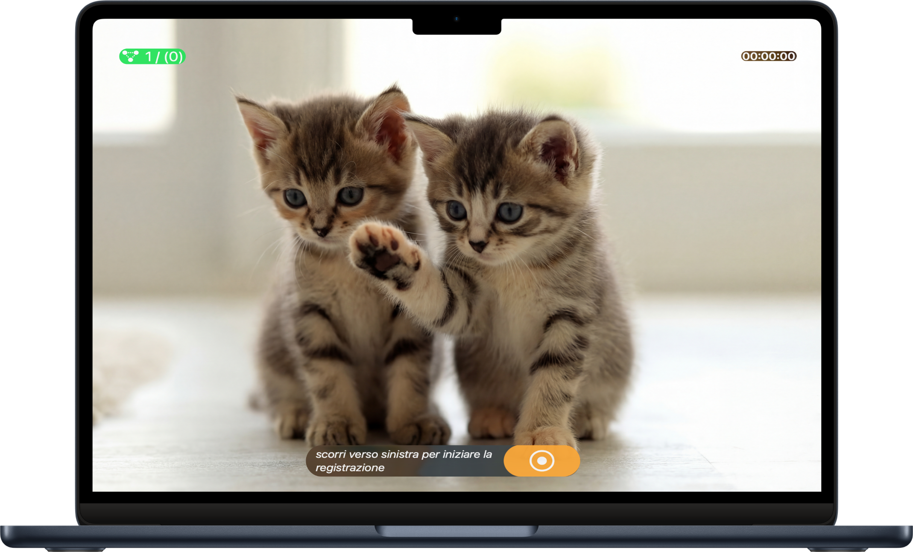
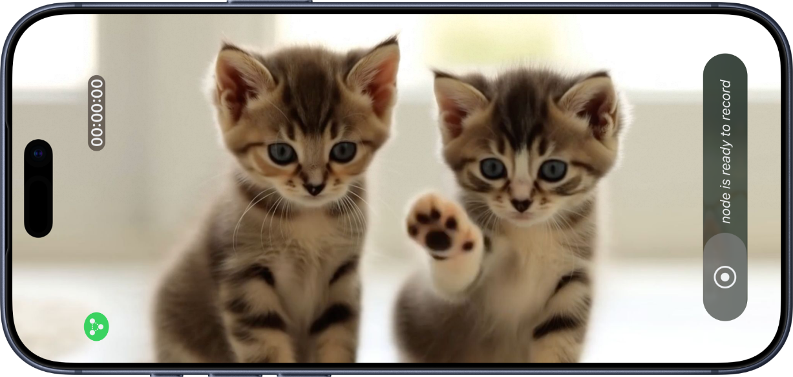
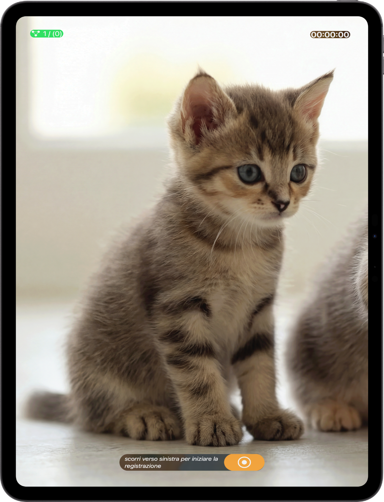

Turn multiple Apple devices into a synchronized multi-angle camera setup, controlled from one place.
Capture the same moment from different angles, while controlling everything from a single device.
Use one device to manage the entire recording session.

Each device records independently, adding another point of view.

All your Apple devices capture the same moment, in sync.

See what's new — watch the latest update video to explore the newest features and improvements.
Unison lets you record video from multiple Apple devices at the same time, while controlling the recording from one device.
Unison works with Apple devices running iOS, iPadOS, or macOS. Any supported device can join a session and record video.
No internet connection is required. Devices connect locally using nearby network and peer-to-peer connectivity.
Yes. During a session, one device is set as the controller (Master) and sends commands to the others.
When the session ends, the recorded videos are transferred to the controlling device and saved locally (unless a connection is interrupted).
On the controlling device. On macOS, they are saved locally so you can access them directly from your files. On iPhone and iPad, in the photo library.
Yes. Each device records using its own camera, so results may differ in resolution and exposure.
Unison is designed for small multi-device setups. Performance depends on device models and network conditions.
Yes. No ads. No subscription.